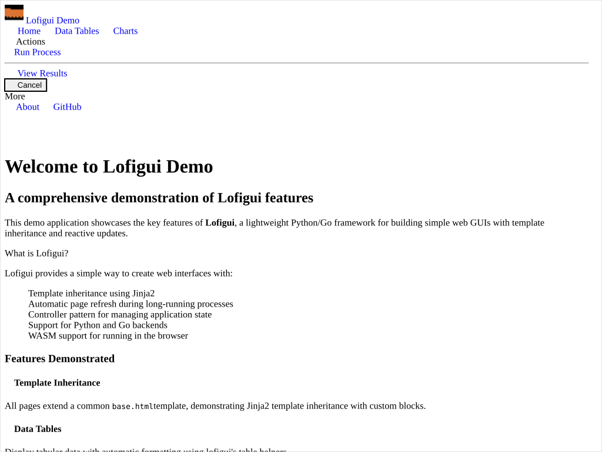
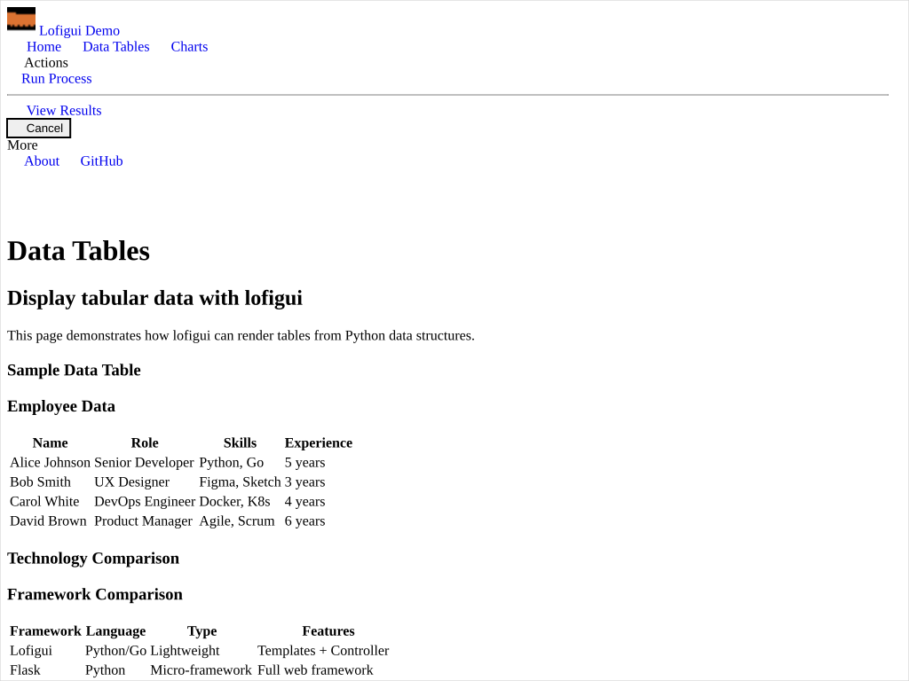

05 — Demo App
Multi-page Python application built around Jinja2 template inheritance. Every page extends a single base.html that owns the navbar, layout columns, and status panel; child templates only fill in the page-specific blocks. The example also wires the lofigui Controller to a long-running background process so the page auto-refreshes while work is in flight.
{% extends %} / {% block %} inheritance is the lesson, and the equivalent Go-template story (using html/template's {{block}} / {{define}}) lives in example 03. If you came here looking for a Go starting point, jump to 03 instead.
Interactivity level: 3 — Polling (whole-page refresh while a process runs) State scope: Global (single FastAPI process — every browser sees the same accumulated buffer)

home.html fills the mainpanel block with feature cards
data.html fills the same block with rendered tablesSame base.html on both pages — only the mainpanel block changes. The navbar, columns, status panel, and footer are inherited unchanged.
How lofigui helps here
Five things from the library do real work in this example:
lg.markdown/lg.table/lg.printaccumulate HTML in the lofigui buffer; routes flush the buffer into a Jinja2 context variable (table_html,chart_content,process_output) and render the template.App.template_response(request, name, extra)locatestemplates/<name>(Jinja2FileSystemLoader), injects lofigui state (refresh,polling,version,name), mergesextra, and returns anHTMLResponse— the only call needed in each route handler.Controller.start_action(refresh_time)/end_action()drive the polling lifecycle. While the action is running,template_responseemits a<meta http-equiv="Refresh" ...>tag into the rendered page, so the browser reloads on a timer.- Built-in
/assets/bulma.min.cssis served byAppnext to your routes —base.htmllinks to it directly with no CDN round-trip. lg.get_favicon_response()returns a ready-made favicon so the navbar's logo slot doesn't 404.
Everything else — Jinja2, FastAPI, Bulma — is plain ecosystem code.
Template inheritance — the point of this example
base.html declares every layout element exactly once and exposes named blocks for child templates to override:
<!-- base.html (abridged) -->
<head>
{% block title %}<title>Lofigui Demo App</title>{% endblock %}
{{refresh | safe}}
<link rel="stylesheet" href="/assets/bulma.min.css"/>
<style>{% block extra_css %}{% endblock %}</style>
</head>
<body>
<nav class="navbar is-primary is-fixed-top">…shared navbar…</nav>
<div class="main-content"><div class="container">
{% block content %}
<div class="columns">
<div class="column is-8"><div class="box">
{% block mainpanel %}<div id="content">Main content</div>{% endblock %}
</div></div>
<div class="column is-4"><div class="box">
{% block statuspanel %}
<p><strong>Status:</strong> {{status | default('Ready')}}</p>
<p><strong>Polling:</strong> {{polling | default('Stopped')}}</p>
{% endblock %}
</div></div>
</div>
{% endblock %}
</div></div>
<footer class="footer">…shared footer…</footer>
</body>
Child pages declare only what they change. home.html extends the base and overrides just the title and the main-column content:
<!-- home.html -->
{% extends "base.html" %}
{% block title %}<title>Home - Lofigui Demo App</title>{% endblock %}
{% block mainpanel %}
<h1 class="title">Welcome to Lofigui Demo</h1>
<div class="columns is-multiline">
<div class="column is-6"><div class="box">…feature card…</div></div>
…
</div>
{% endblock %}
data.html overrides the same mainpanel block with table HTML produced by lg.table — the navbar and status panel come through unchanged from base.html:
<!-- data.html -->
{% extends "base.html" %}
{% block title %}<title>Data Tables - Lofigui Demo App</title>{% endblock %}
{% block mainpanel %}
<h2 class="title">Data Tables Demo</h2>
<div class="content">{{table_html | safe}}</div>
<hr>
<div class="content">{{comparison_table | safe}}</div>
{% endblock %}
base.html and is inherited by every page; adding a new nav item is a one-file change. The two-column content block, the statuspanel, the footer, and the burger-menu JS are all shared the same way. Compare this to copying a navbar into seven separate templates.
Available blocks
| Block | Where | Purpose |
|---|---|---|
title |
<head> |
Per-page <title> |
extra_css |
<head> |
Per-page CSS additions |
extra_js |
<script> (end of body) |
Per-page JS additions |
content |
Main area | Replace the entire two-column layout (rare) |
mainpanel |
Left column | Page-specific content (most common) |
statuspanel |
Right column | Override the default Status / Polling display |
The routes — turning lofigui buffers into template context
Each route resets the lofigui buffer, prints page-specific output, snapshots the buffer with lg.buffer(), and passes that snapshot as a context variable to template_response:
import lofigui as lf
from lofigui import App
app_instance = App(template_dir="templates")
app_instance.controller = Controller()
fastapi_app = FastAPI(title="Lofigui Demo")
@fastapi_app.get("/data", response_class=HTMLResponse)
async def data_tables(request: Request):
lf.reset()
lf.markdown("### Employee Data")
lf.table(employee_data, header=["Name", "Role", "Skills", "Experience"])
table_html = lf.buffer() # snapshot one section
lf.reset()
lf.markdown("### Framework Comparison")
lf.table(comparison_data, header=[…])
comparison_table = lf.buffer() # snapshot the second
return app_instance.template_response(request, "data.html", {
"table_html": table_html,
"comparison_table": comparison_table,
"status": "Ready",
"polling": "Stopped",
})
reset + buffer twice. The lofigui buffer is process-global. Each reset() clears it; each buffer() returns a snapshot of what has been printed since. Pulling two snapshots in a single handler lets a single template render two independent regions (the employee table and the comparison table) without merging them. The same idea generalises to any number of named regions.
Process management — Controller.start_action / end_action
The /start_demo_process route runs a long simulated job and shows the auto-refresh polling pattern in action:
@fastapi_app.post("/start_demo_process")
async def start_demo_process(duration: int = Form(10)):
app_instance.start_action(refresh_time=2) # turn on auto-refresh
lf.reset()
lf.markdown("## Demo Process Started")
duration = max(1, min(duration, 60))
for i in range(duration):
lf.print(f"Step {i + 1}/{duration} - Progress: {int((i + 1) / duration * 100)}%")
await asyncio.sleep(1)
lf.markdown("### Process Complete!")
app_instance.end_action() # turn off auto-refresh
return RedirectResponse(url="/display", status_code=303)
While the action is running, template_response injects a <meta http-equiv="Refresh" content="2; URL=…"> tag into every rendered page, so the browser reloads every two seconds and re-reads the live lf.buffer(). Once end_action() returns, the meta tag is omitted and the page stops reloading.
/stop, which calls end_action(). Because every page extends base.html, the Cancel button is present on every screen — the user can interrupt the process from the Home, Data, or Charts page without losing context.
Routes at a glance
| Method + Path | Template | Purpose |
|---|---|---|
GET / |
home.html |
Feature overview, links into the rest of the demo |
GET /data |
data.html |
Two lg.table snapshots rendered side-by-side |
GET /charts |
charts.html |
Markdown + code blocks demonstrating chart integration points |
GET /process |
process.html |
Form + status; redirects to /display when running |
POST /start_demo_process |
(redirect) | Kicks off the simulated job |
POST /stop |
(redirect) | Cancels a running job |
GET /display |
display.html |
Renders the final lf.buffer() after the job completes |
GET /about |
about.html |
Static info page (still inherits the shared layout) |
Running it
task example-05 # or: task py05, task demo
# Server listens on http://localhost:8050
The example-05 task lives in Taskfile.yml and runs:
cd examples/05_demo_app/python
uv sync --no-install-project
uv run --no-project python demo_app.py
pyproject.toml pins lofigui to a relative editable install (../../../) so the demo always uses the in-tree library.
Where to go next
- The same inheritance idea in Go — 03 Style Sampler does five layouts on top of one
base.htmlusing Go'shtml/template{{block}}/{{define}}. Same idea, different engine, plus a WASM build. - A simpler polling example — 01 Hello World is the minimum: one route, one template, one model.
- Forms / CRUD — 06 Notes CRUD shows the redirect-after-POST pattern with no polling at all.